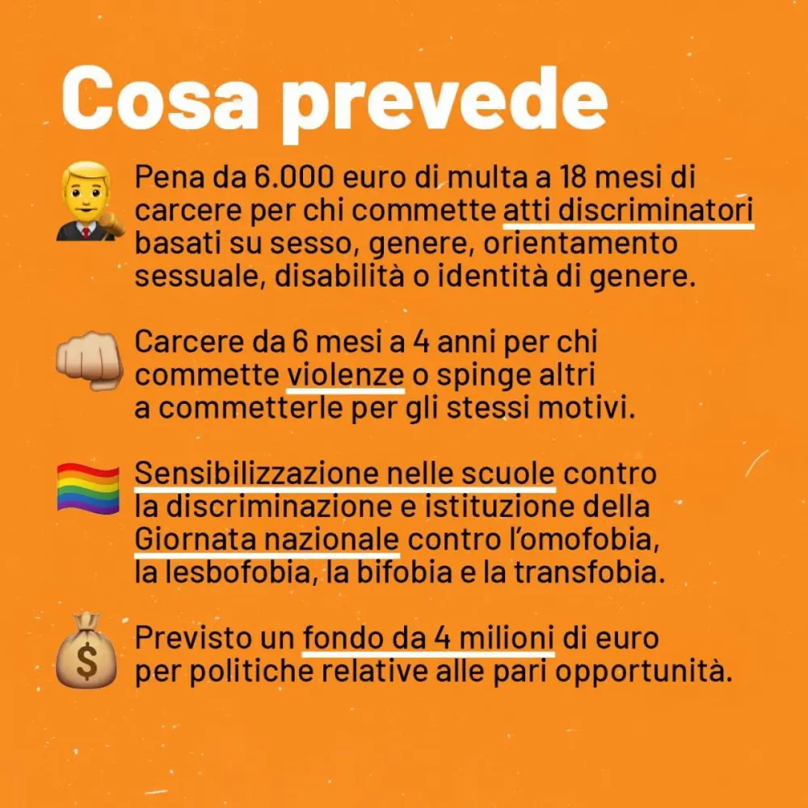

Il ddl zan un'opportunità anche per i disabili

154 parlamentari hanno votato affinché l’Italia non si dotasse di una legge contro l’omolesbobitransfobia votando in favore della cosiddetta “tagliola” al ddl Zan, possibile grazie all’art.96 del regolamento del Senato che di fatto permette ai senatori di non discutere una legge.
La votazione ha registrato 131 contrari e 2 astenuti. Il tutto a scrutinio segreto, così che non sia apparentemente possibile imputare a ciascun* la responsabilità di aver affossato la legge e, di fatto, un passo importante verso la modernità per l’Italia.
Ma sapevate che la legge ddl zan era rivolta anche per i disabili?
Di fatti, il ddl zan puniva chiunque avesse l'aria di superiorità e di odio razzista. Ma con questa legge appunto, l'idea di 'punire' si estendeva anche verso le discriminazioni di genere, di orientamento sessuale, di genere e di disabilità.
Per i mas media il parlamento si è acceso intorno ai temi dell'identità di genere e dell'orientamento sessuale; mentre è rimasto un po' a parcheggio su un altro argomento di discriminazione preso in considerazione dal disegno di legge, la disabilità.

Non so se avete letto che in pratica, la legge dovrebbe stabilire che essere una persona disabile non dovrebbe essere meglio o peggio rispetto a non esserlo.
Mi spiego meglio, la disabilità è il risultato dell'inclusione dell'individuo stesso.
Vi faccio un esempio le offese verbali quali "handicappato, down, mongoloide", detti in modo dispregiativo, sono violenze verbali che dovrebbero essere punite.
Oppure, prendiamo come esempio una cosa comune per tutti:
"LE BARRIERE ARCHITETTONICHE", sono un esempio di puro e vero abilismo, questo perché?
Perche sono state fatte e progettate a prova di persone abili non considerando i disabili.
O ancora, provare del pietismo, compassione, verso una persona disabile, come se esserlo è solo una condizione di totale tristezza senza senso di vita.
Un altro esempio ancora?
Le frasi del tipo: "non sembri disabile", "nonostante tutto', ecc ecc. Sono forme di discriminazione, come se avere a che fare con una persona disabile è tutto un problema, un imbarazzo, una vergogna.
Dunque, la legge ddl zan non ha interessato solo il mondo lgbt+ ma anche il mondo dei disabili e questo diritto è stato rifiutato anche a noi.
Ancora una volta voi del parlamento, non ci avete tutelati.
Ancora una volta ci troviamo inermi ed indifesi dinanzi ai nostri diritti.
Ancora una volta siamo dimenticati da tutti, anche dallo stesso mondo Lgbt+ che, ha pensato a manifestare solo ed esclusivamente per la loro categoria.